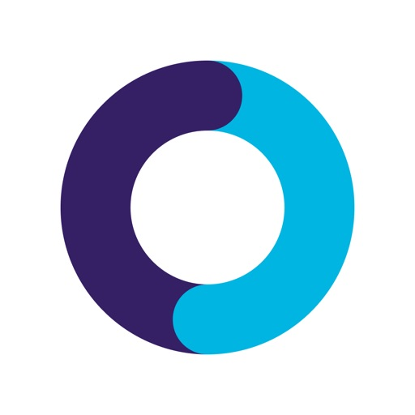

Rollout controls, consumer-platform telemetry, device and eligibility complexity, and AI-assisted operational response all sit inside your stated remit.

A buyer-fit concept for Teladoc Health: pair member-safe fallback flows with cohort-aware rollout controls so auth loops, missing chronic-care modules, and callback failures stop spreading across a HIPAA-governed mobile platform.
John, your CRM scope points to platform maturity, rollout modernization, AI-enabled engineering, responsible AI, and componentized personalization. Recent review evidence says the next leverage point is not another isolated screen refresh. It is a safer way to ship and recover across different member cohorts.
Rollout controls, consumer-platform telemetry, device and eligibility complexity, and AI-assisted operational response all sit inside your stated remit.
Recent store reviews were 3 stars or below, with the loudest pattern around callback failures, missing modules, auth loops, and brittle navigation.
Low-score reviews explicitly mention care handoff or routing failure. That is trust loss, support load, and avoidable operational noise in one metric cluster.
Teladoc’s public privacy notice spells out HIPAA ACE / OHCA structure, HIE participation, and AI-enabled operational tooling. Any fix has to preserve assurance, not bypass it.
Teladoc’s app is trying to be one front door for urgent care, chronic care, devices, therapy, family, insurance, and referrals. The public friction pattern says the app is not failing uniformly. It is failing by journey and member context.
Missed callbacks, auth loops, and invisible chronic-care tools make the member experience feel unreliable at the exact moment people need reassurance.
Once multiple care lines, device states, and entitlement rules are composited into one shell, releases can break differently by cohort without obvious global alarms.
Add a cohort-safe release layer that catches those failures early, creates rollback evidence, and gives members a recovery path instead of a dead end.
23 low-score review hits on handoff or routing, 15 on stability, 13 on missing data or modules.
Store listings and the main site both market connected diabetes, weight, blood pressure, and device-enabled care inside one app.
2025 revenue was $2.53B, with $1.58B from Integrated Care. This is a large, high-leverage platform, not a side app.
PHI-safe event capture, role-based access, and formal privacy workflows must remain intact.
AI can suggest anomalous cohorts and likely causes, but humans approve rollbacks and care-impacting actions.
Every missed callback or missing program card becomes a support problem. The fix must reduce that operational drag.
The member view becomes calmer and more recoverable. The platform view becomes specific enough to stop bad releases at the cohort level. This concept shows both surfaces because John’s problem is not purely inside the phone.
No missed call. No secure fallback. The member is pushed into support without context.
Face ID turned back off. Password flow reset. The member is repeating identity steps before care even starts.
A flagged release cohort now gets stable navigation, known-good modules, and a guided recovery lane while engineering validates the issue.
We restored your last stable care view while we verify a recent update. Your data and visit history are still available.
Only the minimum journey state is shown here. Full incident evidence, approvals, and PHI-safe diagnostics remain in the platform console.
The core idea is a cohort-aware release layer that connects feature rollouts, support signals, and care-journey failures before the issue looks “random” from the outside.
Detect anomaly in members with device-sync state plus eligibility cache mismatch. Suggest rollback to stable composition layer.
Release manager approves scoped rollback for one cohort only. Clinical and privacy owners are notified, not bypassed.
Support sees issue label, affected journey, fallback path, and safe explanation. No raw PHI spillover into general ops views.
Every rollout change, alert, response action, and reviewer is versioned for incident review, RAI governance, and compliance documentation.
Anomaly crosses threshold in one chronic-care cohort.
Scoped rollback restores stable home modules and callback fallback.
Member-safe banner and support macro go live automatically.
Incident packet is ready for platform, privacy, and product review.
Wire rollout state to member entitlements, device status, and journey health so platform changes can be paused with precision instead of broad rollback panic.
Replace silent failure with guided recovery for callback routing, auth persistence, and missing module states, keeping the member inside a trusted care path.
Give support and operations the journey metadata they need without widening PHI exposure, reducing escalations that begin with “we can’t reproduce it.”
Keep anomaly detection explainable, human-reviewed, and exportable so the platform becomes safer without creating new governance debt.
The idea here is simple: keep Teladoc’s unified care promise intact even when one cohort, one device path, or one rollout starts behaving badly. That is the kind of platform work an SVP of Consumer Experience Engineering can actually sponsor.